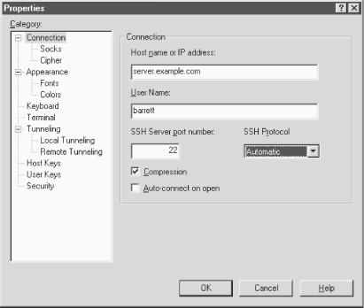

16.2. Basic Client Use
Client behavior is set in the
Properties window: visit the Edit menu
and select Properties (
Figure 16-1). Select
Connection, and enter the information as shown in the figure. Click
OK to close the window, and then in the File menu choose Connect.
Since no public keys are known to the program yet, password
authentication is used. If all goes well, you are prompted for your
login password by the remote server, and then you're logged in
via SSH.

Figure 16-1. F-Secure SSH Client Connection properties window
Once logged in, the program operates just like a normal terminal
program. SSH's end-to-end encryption is transparent to the
user, as it should be.
When your settings are as you like them, create a
session
file to store them. Session files are named with
.ssh
extensions and may be saved and opened with (surprise, surprise) the
Save and Open commands in the File menu.
 |  |  |
| 16. F-Secure SSH Client |  | 16.3. Key Management |